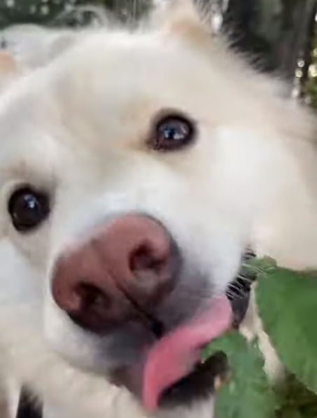

진국이(사모예드 믹스)는 정말 풀 먹는 것을 좋아합니다. 말리지 않고 가만히 놔두면 눈앞에 있는 모든 풀을 먹어버릴 것만 같아요. 실제로 진국이가 풀을 먹는 장면을 보신 적 있으신가요? 보시면 깜짝 놀라실걸요?

사실 진국이가 먹는 풀은 정해져 있어요. 깻잎을 닮은 풀, 난초를 닮은 풀을 주로 먹죠. 놀라운 건, 진국이는 제가 집에서 주는 과일은 싫어한답니다. 과일이 더 맛있지 않나요? 저도 풀을 더 좋아하는 진국이의 마음을 알 수 없어요.